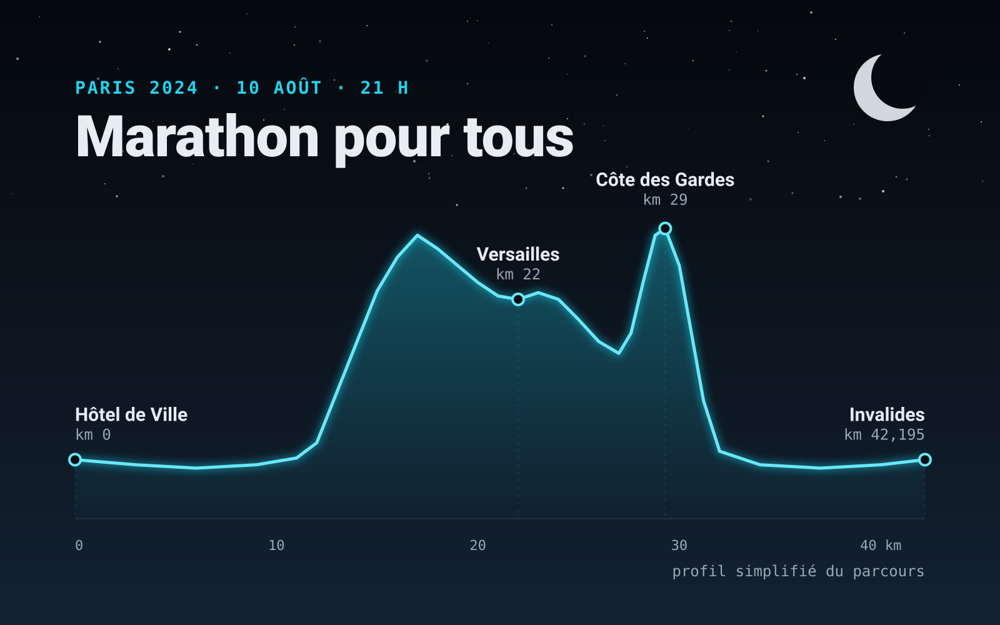
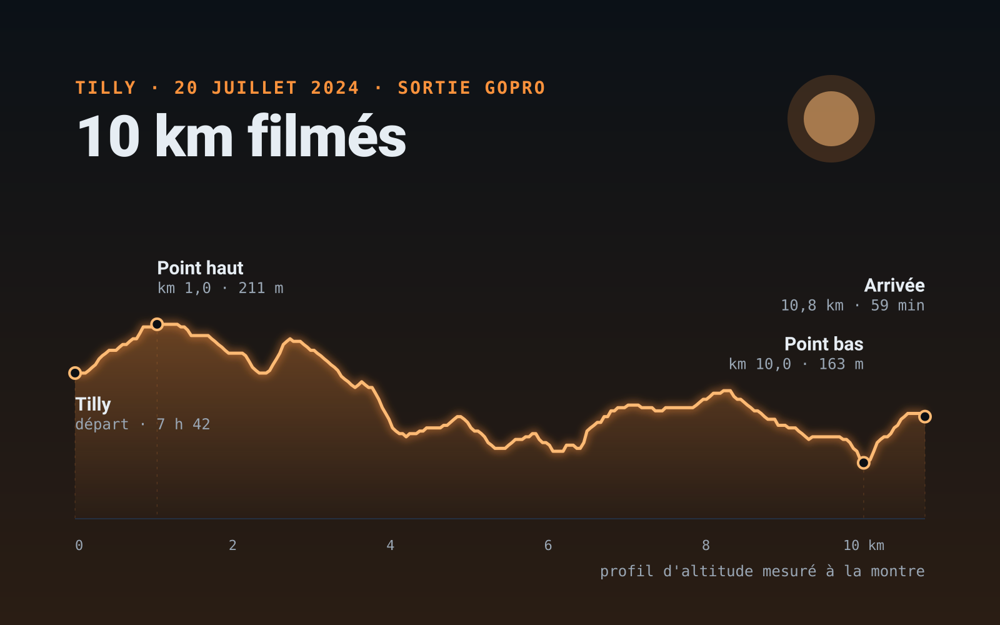
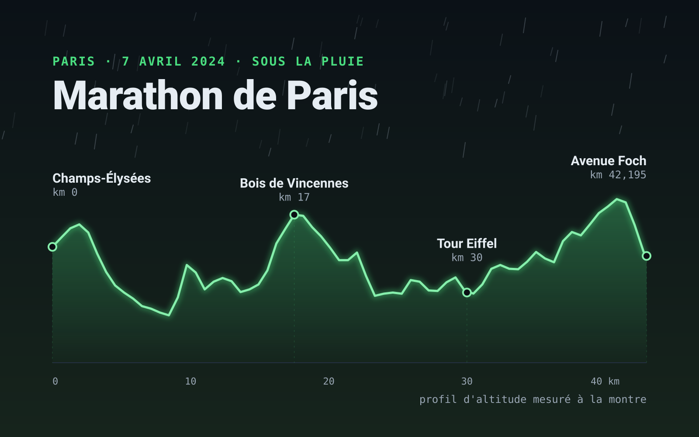
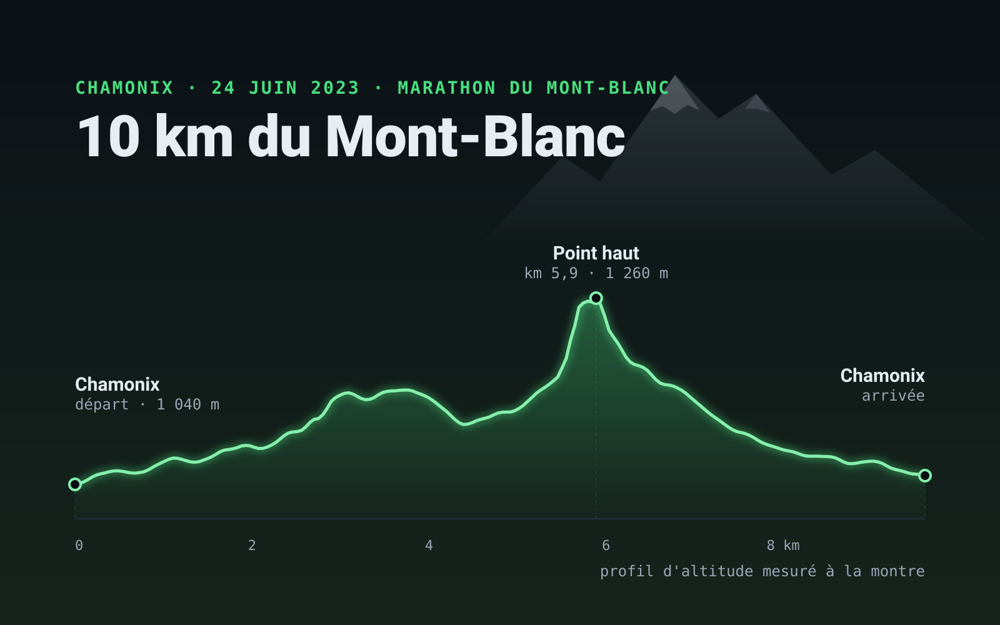
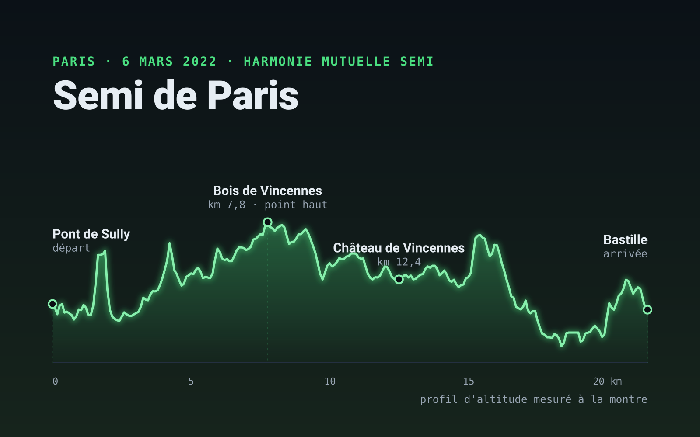

Marathon pour tous 2024 : 42 km de nuit sur le parcours olympique
Le 10 août 2024, j'ai couru de nuit le Marathon pour tous des Jeux de Paris, sur le parcours des athlètes olympiques. Récit, chiffres et photos.
Deux terrains de jeu : la route et le trail.
Sur route, des kilomètres et des objectifs chronométrés. Le récit de mes courses marquantes.

Le 10 août 2024, j'ai couru de nuit le Marathon pour tous des Jeux de Paris, sur le parcours des athlètes olympiques. Récit, chiffres et photos.

Le 20 juillet 2024, au lendemain d'un gros apéro, j'ai couru 10,8 km autour de Tilly avec une GoPro. La vidéo, le parcours et les chiffres.

Le 7 avril 2024, j'ai couru le Schneider Electric Marathon de Paris, sous un ciel gris et des averses. Récit, chiffres et photos.

Le 24 juin 2023, j'ai couru les 10 km du Marathon du Mont-Blanc à Chamonix : deux montées en forêt, une descente en file indienne et un retour à fond. Récit, chiffres et photos.

Le 6 mars 2022, j'ai couru l'Harmonie Mutuelle Semi de Paris : les quais de Seine, une grande boucle dans le bois de Vincennes et un retour plus rapide que l'aller. Récit, chiffres et photos.
Du dénivelé, de la boue et des levers de soleil. Le trail, c'est là que je vide ma tête et que je recharge les batteries.